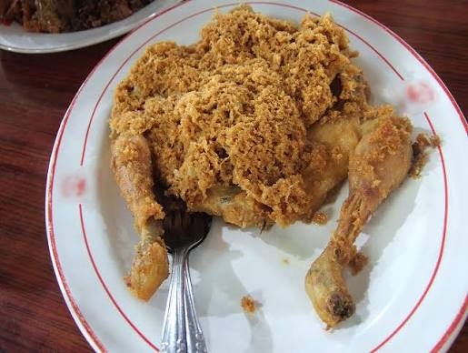

Ayam Goreng

Description
Ayam goreng is one of the main dish that serve in most of Malaysia's Families. Its indeed a must to have ayam goreng since it porvide satisfaction for apetite and for fullness for one's stomach. Not just that, it also provides several benefits such as proteins and energy for you to go on with your day.
Ingredients
Steps
- Defrost the chicken(if you store it in the freezer)
- Rev up those fryers
- Put your defrosted chicken inside the fryer (assuming the chicken is chopped)
- Eh wait, i forget to mention that you need to coat it with its flour
- Then put your coated chicken inside the fryer
- Then Wait until its crispy enough
- Then Bam! The supreme ayam goreng is ready to be serve!